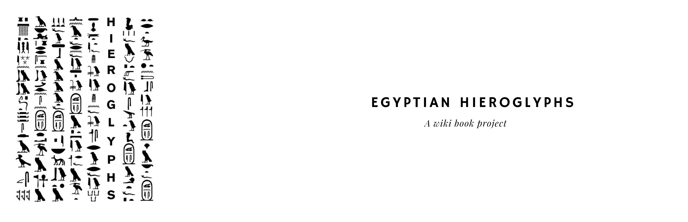
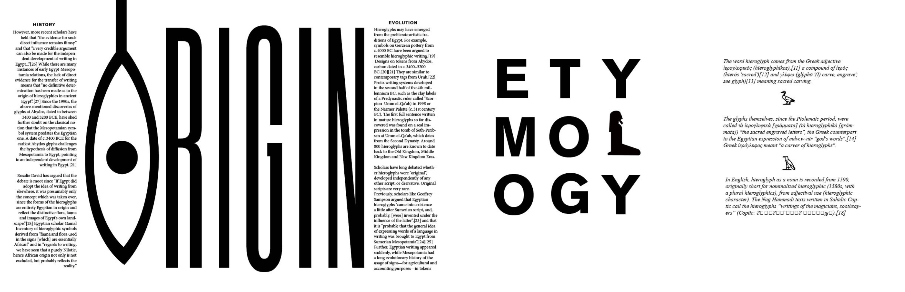
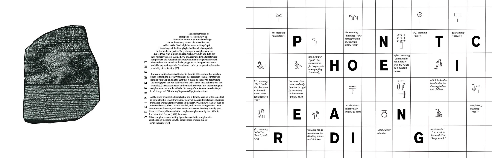
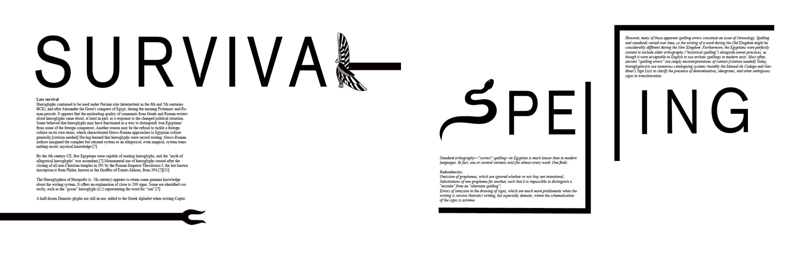
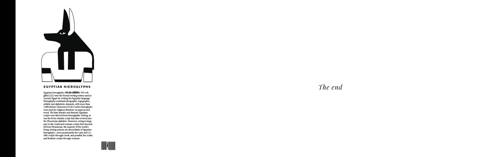
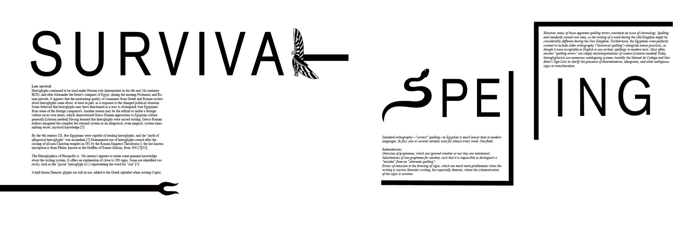
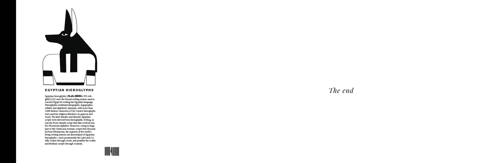
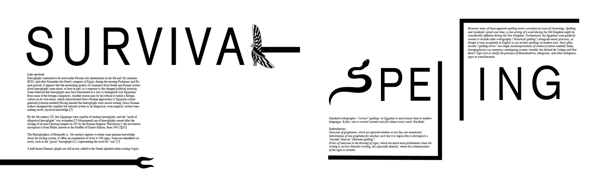
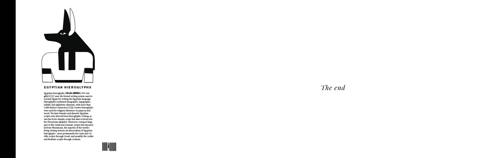

* Egyptian Hieroglyph Magazine
* 2024
* Typography Project
* Illustration
* Type Design
This magazine is a typography-focused design project exploring the ancient art of Egyptian hieroglyphs. Created in a striking black-and-white palette, it emphasizes the intricacy of type design by replacing English alphabets with hieroglyphic symbols. This deliberate transformation enhances the visual and conceptual depth of the publication, immersing readers in the essence of hieroglyphic communication.



 





